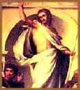

Conheça aqui
os eventos dramáticos da Via Crucis e os acontecimentos
inexplicáveis e extraordinários que ocorreram logo
após a morte de Jesus.
A cruz
Ela não era alta e imponente como imaginaram
os pintores renascentistas e os cineastas americanos. Era baixa,
acanhada, quase insignificante em sua crueldade. Fabricada a
partir de uma árvore de pequeno porte, a oliveira
palestinense, a cruz não excedia a altura de um
homem. Para acomodar-se nela, a vítima devia ser pregada
com os joelhos dobrados. Havia três categorias de cruzes.
A mais simples não ia além da própria árvore,
com os galhos aparados. A intermediária utilizava o tronco
ainda enraizado da oliveira, ao qual se amarrava com cordas
uma barra horizontal, conduzida ao local de execução
pelo próprio condenado. A mais sofisticada consistia
num poste rústico, feito a partir do tronco e permanentemente
fixado no chão; nele, a barra era encaixada por meio
de uma fenda. Nos três casos, um pequeno suporte horizontal
permitia à vitima sentar-se, impedindo que seus pulsos
rompessem devido à ação do peso e prolongando-lhe
a agonia.
Os ferimentos
Apesar de Jesus não ter carregado a cruz
inteira, como supôs a piedosa imaginação
popular, a barra horizontal era suficientemente pesada para
lhe ter provocado grandes hematomas nas costas. Ao menos, é
o que se depreende da dramática imagem do Santo Sudário.
Ainda mais impressionantes são os sinais de 90 a 120
ferimentos, causados pelo açoite. E 72 perfurações
na cabeça, produzidas pela coroa de espinhos. Os pregos,
de cerca de 18 centímetros, não lhe foram afixados
nos meios das mãos, como se acreditou durante muito tempo.
Mas numa parte do pulso conhecida pelos anatomistas como espaço
de Destot, entre os ossos rádio e una. Se o traspassamento
tivesse ocorrido nas mãos, estas teriam rasgado com o
peso do corpo. No espaço de Destot, a introdução
dos pregos assegurava uma firme sustentação na
cruz. Um terceiro prego, juntando os dois pés, completava
a fixação.
Morte
por asfixia
Na cruz, os braços altos dificultavam
a respiração do condenado; os líquidos
se acumulavam nos pulmões; e a morte sobrevinha por asfixia.
Para tomar fôlego durante a longa agonia, as vítimas
erguiam-se várias vezes de seus assentos, sustentando-se
nos três pregos. Por isso, após várias horas
de suplício, suas pernas eram quebradas, de modo a acelerar
a morte. A análise do Sudário mostra que esse
procedimento de rotina não ocorreu no caso do homem cuja
imagem ficou gravada no tecido - o que concorda com a narrativa
dos evangelhos, segundo a qual não foi quebrado nenhum
dos ossos de Jesus.
A estocada de lança, um golpe de misericórdia,
perfurou o peito do homem quando ele já se encontrava
morto. Um forte jato de hemácias (a parte vermelha do
sangue) seguido de um fluxo de plasma (a parte clara) prova
que grande quantidade de sangue se acumulara e decantara no
pericárdio. E essa informação outra vez
converge com o texto bíblico, que fala "num
jorro de sangue e água".
Presságios
e acontecimentos extraordinários
Era comum os crucificados sobreviverem por até
três dias. Talvez devido às terríveis torturas
que sofreu na casa de Caifás e entre os soldados romanos,
Jesus morreu em apenas seis horas.
Os evangelhos narram diversos acontecimentos,
que teriam pontuado essas horas dramáticas. A narrativa
mais detalhada, a de Mateus, diz que "desde a hora
sexta até a hora nona, isto é, do meio dia as
três da tarde, houve treva em toda a terra".
Quando Jesus exalou o último suspiro,
o véu do Santuário se rasgou em duas partes, de
cima a baixo, a terra tremeu e as rochas se fenderam. Se as
trevas mencionadas pelo evangelista corresponderem a um eclipse,
a morte de Jesus deve ter ocorrido no ano 30 d.C., quando se
deu um evento dessa natureza. Considerando que Jesus nasceu
entre os anos 8 e 6 a.C., ele deve ter vivido então de
36 a 38 anos, e não 33 conforme fixou a antiga tradição
cristã.
A ressurreição
Para os discípulos e outros que acreditaram
nele, a morte de Jesus deve ter sido um golpe demolidor. Surpresos
com a rapidez dos acontecimentos, aturdidos com um desfecho
que contrariava suas expectativas, amedrontados com o possível
alargamento da repressão, eles certamente sentiram o
chão ceder debaixo dos pés. Que perplexidade,
que angústia, que desalento! No entanto, toda a sua perspectiva
se refez com a notícia da ressurreição.
Manipulação? Metáfora? Milagre? Como interpretar
esse derradeiro mistério?
O sepulcro vazio
Segundo o teólogo Leonardo Boff, a análise
crítica dos evangelhos sugere que se constituíram
inicialmente dois relatos independentes acerca da ressurreição:
o do sepulcro vazio, visto pelas mulheres que foram visitá-lo
na manhã do terceiro dia após a morte; e o da
aparição do mestre ressuscitado aos discípulos.
O Mestre em
carne e osso
Mais
tarde esses dois retalhos da tradição oral foram
costurados na composição dos evangelhos. A narrativa
resultante é muito sumária em Marcos e Mateus
e bem mais extensa e inspiradora em Lucas e João. O texto
dos Atos dos Apóstolos, uma obra também atribuída
ao evangelista Lucas, fixa em 40 dias o tempo de permanência
de Jesus ressuscitado na Terra. O evangelho gnóstico
Pistis Sophia prolonga a estadia para 11 meses e apresenta os
ensinamentos esotéricos supostamente comunicados durante
esse período. Os canônicos afirmam que os discípulos
não reconhe-ceram Jesus num primeiro momento. E o fazem
aparecer e desaparecer de cena misteriosamente. Certas correntes
do cristianismo primitivo interpretaram esses dados como indícios
de que o mestre voltara à Terra num corpo sutil. No entanto,
em Lucas, o próprio Jesus insiste na materialidade de
seu corpo: "Vede minhas mãos e meus pés:
Sou eu! Apalpai-me e entendei que um espírito não
tem carne, nem ossos, como estais vendo que eu tenho".
A ressurreição
à luz das religiões orientais
O mistério da ressurreição
certamente escapa à capacidade interpretativa da ciência
atual. Mas a idéia da transmutação do corpo
físico e da conquista da imortalidade não é
estranha à antigas tradições espirituais
como o shivaísmo indiano e o taoísmo chinês.
Embora extrema-mente rara - dizem - essa possibilidade estaria
no horizonte de todo ser humano. E teria sido alcançada
pelos siddhas (perfeitos): homens e mulheres que, pela devoção
integral a Deus, pelo exercício sistemático da
auto-observação e pela prática intensiva
das diversas disciplinas da yoga, supostamente atingiram um
estágio supremo de desenvolvimento, realizando a essência
divina em todos os planos da existência. Essa hipótese
permite-nos enxergar Jesus por mais um ângulo. E acrescenta
uma nova configuração a sua imagem caleidoscópica.